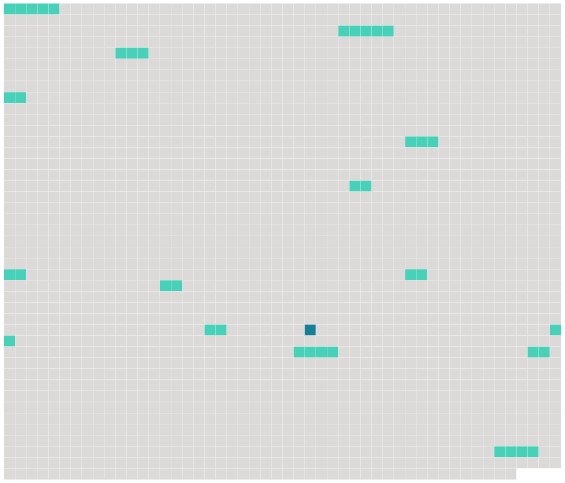

Longueur nb maillons : 15 mentions |
|
[Du divorce par consentement mutuel] [9 phrases]
Les époux déterminés à opérer [le divorce par consentement mutuel] , seront tenus de faire préalablement inventaire et estimation de tous leurs biens meubles et immeubles et de régler leurs droits respectifs, sur lesquels il leur sera néanmoins libre de transiger. [2 phrases]
À qui les enfans nés de leur union seront confiés, soit pendant le temps des épreuves, soit après [le divorce prononcé] ; [7 phrases]
Si les époux persistent dans leur résolution, il leur sera donné acte, par le juge, de ce qu'ils demandent [le divorce] et y consentent mutuellement ; et ils seront tenus de produire et déposer à l'instant, entre les maint des notaires, outre les actes mentionnés aux articles 279 et 280, [5 phrases]
Les notaires dresseront procès-verbal détaillé de tout, ce qui aura été dit et fait en exécution des articles précédens ; la minute en restera au plus âgé des deux notaires, ainsi que les pièces produites, qui demeureront annexées au procès verbal, dans lequel il sera fait mention de l'avertissement qui sera donné à la femme de se retirer, dans les vingt-quatre heures, dans la maison convenue entre elle et son mari, et d'y résider jusqu' [au divorce prononcé] [4 phrases]
Dans la quinzaine du jour où sera révolue l'année, à compter de la première déclaration, les époux, assistés chacun de deux amis, personnes notables dans l'arrondissement, âgés de cinquante ans au moins, se présenteront ensemble et en personne devant le président du tribunal ou le juge qui en fera les fonctions ; ils lui remettront les expéditions en bonne forme, des quatre procès-verbaux contenant leur consentement mutuel, et de tous les actes qui y auront été annexés, et requerront du magistrat, chacun séparément, en présence néanmoins l'un de l'autre et des quatre notables, l'admission [du divorce] [8 phrases]
S'il en résulte que, dans l'opinion du tribunal, les parties ont satisfait aux conditions et rempli les formalités déterminées par la loi, il admettra [le divorce] , et renverra les parties devant l'officier de l'état civil, pour le faire prononcer dans le cas contraire, le tribunal déclarera qu'il n'y a pas lieu à admettre [le divorce] , et déduira les motifs de la décision. [1 phrases]
L'appel du jugement qui aurait déclaré ne pas y avoir lieu à admettre [le divorce] ne sera recevable qu'autant qu'il sera interjeté par les deux parties et néanmoins par actes séparés dans les dix jours au plutôt et au plus tard dans les vingt jours de là date du jugement de première instance. [6 phrases] En vertu du jugement qui admettra [le divorce] , et dans les vingt jours de [sa] date, les parties se présenteront ensemble et en personne devant l'officier de l'état civil, pour faire prononcer [le divorce] [8 phrases]
Dans le cas de [divorce par consentement mutuel] , aucun des deux époux ne pourra contracter un nouveau mariage que trois ans après la prononciation [du divorce] [17 phrases]
Dans le cas de [divorce par consentement mutuel] , la propriété de la moitié des biens de chacun des deux époux sera acquise de plein droit, du jour de leur première déclaration, aux enfans nés de leur mariage : les père et mère conserveront néanmoins la jouissance de cette moitié jusqu'à la majorité de leurs enfans, à la charge de pourvoir à leur nourriture, entretien et éducation, conformément à leur fortune et à leur état ; le tout sans préjudice des autres avantages qui pourraient avoir été assurés auxdits enfans par les conventions matrimoniales de leurs père et mère. |
 |
Il est possible de télécharger la ressource sur la page Ortolang |
Si vous avez des questions ou vous voyez des erreurs, merci d'envoyer un mail à silvia.federzoni89@gmail.com |